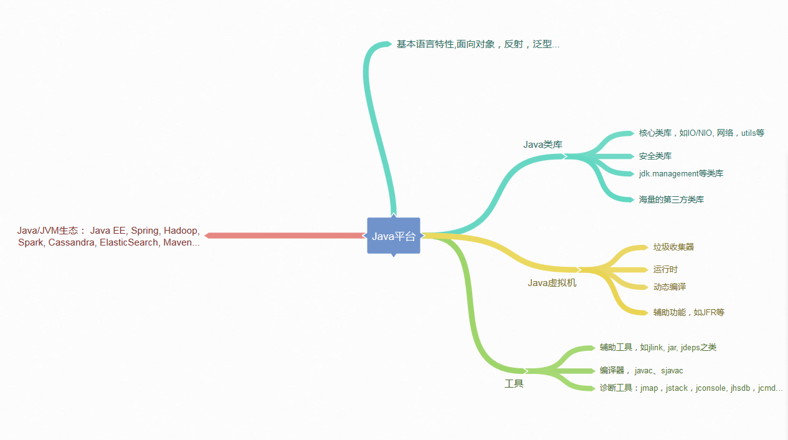

- 00 开篇词 以面试题为切入点，有效提升你的Java内功.md
- 01 谈谈你对Java平台的理解？.md
- 02 Exception和Error有什么区别？.md
- 03 谈谈final、finally、 finalize有什么不同？.md
- 04 强引用、软引用、弱引用、幻象引用有什么区别？.md
- 05 String、StringBuffer、StringBuilder有什么区别？.md
- 06 动态代理是基于什么原理？.md
- 07 int和Integer有什么区别？.md
- 08 对比Vector、ArrayList、LinkedList有何区别？.md
- 09 对比Hashtable、HashMap、TreeMap有什么不同？.md
- 10 如何保证集合是线程安全的_ ConcurrentHashMap如何实现高效地线程安全？.md
- 11 Java提供了哪些IO方式？ NIO如何实现多路复用？.md
- 12 Java有几种文件拷贝方式？哪一种最高效？.md
- 13 谈谈接口和抽象类有什么区别？.md
- 14 谈谈你知道的设计模式？.md
- 15 synchronized和ReentrantLock有什么区别呢？.md
- 16 synchronized底层如何实现？什么是锁的升级、降级？.md
- 17 一个线程两次调用start()方法会出现什么情况？.md
- 18 什么情况下Java程序会产生死锁？如何定位、修复？.md
- 19 Java并发包提供了哪些并发工具类？.md
- 20 并发包中的ConcurrentLinkedQueue和LinkedBlockingQueue有什么区别？.md
- 21 Java并发类库提供的线程池有哪几种？ 分别有什么特点？.md
- 22 AtomicInteger底层实现原理是什么？如何在自己的产品代码中应用CAS操作？.md
- 23 请介绍类加载过程，什么是双亲委派模型？.md
- 24 有哪些方法可以在运行时动态生成一个Java类？.md
- 25 谈谈JVM内存区域的划分，哪些区域可能发生OutOfMemoryError_.md
- 26 如何监控和诊断JVM堆内和堆外内存使用？.md
- 27 Java常见的垃圾收集器有哪些？.md
- 28 谈谈你的GC调优思路_.md
- 29 Java内存模型中的happen-before是什么？.md
- 30 Java程序运行在Docker等容器环境有哪些新问题？.md
- 31 你了解Java应用开发中的注入攻击吗？.md
- 32 如何写出安全的Java代码？.md
- 33 后台服务出现明显“变慢”，谈谈你的诊断思路？.md
- 34 有人说“Lambda能让Java程序慢30倍”，你怎么看？.md
- 35 JVM优化Java代码时都做了什么？.md
- 36 谈谈MySQL支持的事务隔离级别，以及悲观锁和乐观锁的原理和应用场景？.md
- 37 谈谈Spring Bean的生命周期和作用域？.md
- 38 对比Java标准NIO类库，你知道Netty是如何实现更高性能的吗？.md
- 39 谈谈常用的分布式ID的设计方案？Snowflake是否受冬令时切换影响？.md
- 周末福利 谈谈我对Java学习和面试的看法.md
- 结束语 技术没有终点.md
01 谈谈你对Java平台的理解？
从你接触Java开发到现在，你对Java最直观的印象是什么呢？是它宣传的 “Write once, run anywhere”，还是目前看已经有些过于形式主义的语法呢？你对于Java平台到底了解到什么程度？请你先停下来总结思考一下。
今天我要问你的问题是，谈谈你对Java平台的理解？“Java是解释执行”，这句话正确吗？
典型回答
Java本身是一种面向对象的语言，最显著的特性有两个方面，一是所谓的“书写一次，到处运行”（Write once, run anywhere），能够非常容易地获得跨平台能力；另外就是垃圾收集（GC, Garbage Collection），Java通过垃圾收集器（Garbage Collector）回收分配内存，大部分情况下，程序员不需要自己操心内存的分配和回收。
我们日常会接触到JRE（Java Runtime Environment）或者JDK（Java Development Kit）。 JRE，也就是Java运行环境，包含了JVM和Java类库，以及一些模块等。而JDK可以看作是JRE的一个超集，提供了更多工具，比如编译器、各种诊断工具等。
对于“Java是解释执行”这句话，这个说法不太准确。我们开发的Java的源代码，首先通过Javac编译成为字节码（bytecode），然后，在运行时，通过 Java虚拟机（JVM）内嵌的解释器将字节码转换成为最终的机器码。但是常见的JVM，比如我们大多数情况使用的Oracle JDK提供的Hotspot JVM，都提供了JIT（Just-In-Time）编译器，也就是通常所说的动态编译器，JIT能够在运行时将热点代码编译成机器码，这种情况下部分热点代码就属于编译执行，而不是解释执行了。
考点分析
其实这个问题，问得有点笼统。题目本身是非常开放的，往往考察的是多个方面，比如，基础知识理解是否很清楚；是否掌握Java平台主要模块和运行原理等。很多面试者会在这种问题上吃亏，稍微紧张了一下，不知道从何说起，就给出个很简略的回答。
对于这类笼统的问题，你需要尽量表现出自己的思维深入并系统化，Java知识理解得也比较全面，一定要避免让面试官觉得你是个“知其然不知其所以然”的人。毕竟明白基本组成和机制，是日常工作中进行问题诊断或者性能调优等很多事情的基础，相信没有招聘方会不喜欢“热爱学习和思考”的面试者。
即使感觉自己的回答不是非常完善，也不用担心。我个人觉得这种笼统的问题，有时候回答得稍微片面也很正常，大多数有经验的面试官，不会因为一道题就对面试者轻易地下结论。通常会尽量引导面试者，把他的真实水平展现出来，这种问题就是做个开场热身，面试官经常会根据你的回答扩展相关问题。
知识扩展
回归正题，对于Java平台的理解，可以从很多方面简明扼要地谈一下，例如：Java语言特性，包括泛型、Lambda等语言特性；基础类库，包括集合、IO/NIO、网络、并发、安全等基础类库。对于我们日常工作应用较多的类库，面试前可以系统化总结一下，有助于临场发挥。
或者谈谈JVM的一些基础概念和机制，比如Java的类加载机制，常用版本JDK（如JDK 8）内嵌的Class-Loader，例如Bootstrap、 Application和Extension Class-loader；类加载大致过程：加载、验证、链接、初始化（这里参考了周志明的《深入理解Java虚拟机》，非常棒的JVM上手书籍）；自定义Class-Loader等。还有垃圾收集的基本原理，最常见的垃圾收集器，如SerialGC、Parallel GC、 CMS、 G1等，对于适用于什么样的工作负载最好也心里有数。这些都是可以扩展开的领域，我会在后面的专栏对此进行更系统的介绍。
当然还有JDK包含哪些工具或者Java领域内其他工具等，如编译器、运行时环境、安全工具、诊断和监控工具等。这些基本工具是日常工作效率的保证，对于我们工作在其他语言平台上，同样有所帮助，很多都是触类旁通的。
下图是我总结的一个相对宽泛的蓝图供你参考。

不再扩展了，回到前面问到的解释执行和编译执行的问题。有些面试官喜欢在特定问题上“刨根问底儿”，因为这是进一步了解面试者对知识掌握程度的有效方法，我稍微深入探讨一下。
众所周知，我们通常把Java分为编译期和运行时。这里说的Java的编译和C/C++是有着不同的意义的，Javac的编译，编译Java源码生成“.class”文件里面实际是字节码，而不是可以直接执行的机器码。Java通过字节码和Java虚拟机（JVM）这种跨平台的抽象，屏蔽了操作系统和硬件的细节，这也是实现“一次编译，到处执行”的基础。
在运行时，JVM会通过类加载器（Class-Loader）加载字节码，解释或者编译执行。就像我前面提到的，主流Java版本中，如JDK 8实际是解释和编译混合的一种模式，即所谓的混合模式（-Xmixed）。通常运行在server模式的JVM，会进行上万次调用以收集足够的信息进行高效的编译，client模式这个门限是1500次。Oracle Hotspot JVM内置了两个不同的JIT compiler，C1对应前面说的client模式，适用于对于启动速度敏感的应用，比如普通Java桌面应用；C2对应server模式，它的优化是为长时间运行的服务器端应用设计的。默认是采用所谓的分层编译（TieredCompilation）。这里不再展开更多JIT的细节，没必要一下子就钻进去，我会在后面介绍分层编译的内容。
Java虚拟机启动时，可以指定不同的参数对运行模式进行选择。 比如，指定“-Xint”，就是告诉JVM只进行解释执行，不对代码进行编译，这种模式抛弃了JIT可能带来的性能优势。毕竟解释器（interpreter）是逐条读入，逐条解释运行的。与其相对应的，还有一个“-Xcomp”参数，这是告诉JVM关闭解释器，不要进行解释执行，或者叫作最大优化级别。那你可能会问这种模式是不是最高效啊？简单说，还真未必。“-Xcomp”会导致JVM启动变慢非常多，同时有些JIT编译器优化方式，比如分支预测，如果不进行profiling，往往并不能进行有效优化。
除了我们日常最常见的Java使用模式，其实还有一种新的编译方式，即所谓的AOT（Ahead-of-Time Compilation），直接将字节码编译成机器代码，这样就避免了JIT预热等各方面的开销，比如Oracle JDK 9就引入了实验性的AOT特性，并且增加了新的jaotc工具。利用下面的命令把某个类或者某个模块编译成为AOT库。
jaotc --output libHelloWorld.so HelloWorld.class
jaotc --output libjava.base.so --module java.base
然后，在启动时直接指定就可以了。
java -XX:AOTLibrary=./libHelloWorld.so,./libjava.base.so HelloWorld
而且，Oracle JDK支持分层编译和AOT协作使用，这两者并不是二选一的关系。如果你有兴趣，可以参考相关文档：http://openjdk.java.net/jeps/295。AOT也不仅仅是只有这一种方式，业界早就有第三方工具（如GCJ、Excelsior JET）提供相关功能。
另外，JVM作为一个强大的平台，不仅仅只有Java语言可以运行在JVM上，本质上合规的字节码都可以运行，Java语言自身也为此提供了便利，我们可以看到类似Clojure、Scala、Groovy、JRuby、Jython等大量JVM语言，活跃在不同的场景。
今天，我简单介绍了一下Java平台相关的一些内容，目的是提纲挈领地构建一个整体的印象，包括Java语言特性、 核心类库与常用第三方类库、Java虚拟机基本原理和相关工具，希望对你有所帮助。
一课一练
关于今天我们讨论的题目你做到心中有数了吗？知道不如做到，请你也在留言区写写自己对Java平台的理解。我会选出经过认真思考的留言，送给你一份学习鼓励金，欢迎你与我一起讨论。
你的朋友是不是也在准备面试呢？你可以“请朋友读”，把今天的题目分享给好友，或许你能帮到他。
© 2019 - 2023 Liangliang Lee. Powered by gin and hexo-theme-book.